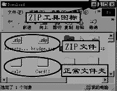
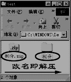

启动ZipMagic
ZipMagic安装后，将随着系统启动而启动。并在系统的状态栏显示图标，在一般情况下，ZipMagic都以后台方式运行，不需要像WinZip的界面窗口来操作压缩文件。要使ZipMagic失效，使用鼠标右键点击状态图标，选择菜单中的“Disable”，即可使程序进入休眠状态。
ZIP文件夹
ZipMagic将压缩文件包当成Windows中文件夹来看待，每一个压缩文件都是一个文件夹。注意，当安装了ZipMagic后，Windows系统都将ZIP压缩文件包认为是一个文件夹，并具有文件夹的属性。但在某些时候，例如选择文件时，就不会把ZIP文件当成一个独立的数据文件，这时候，就要使ZipMagic休眠，ZIP文件才会成为一个独立的数据文件。
 操作ZIP文件夹 操作ZIP文件夹
鼠标双击ZIP文件夹，就可以将ZIP文件像一般的Windows窗口一样打开。窗口中列出了ZIP压缩包中的文件，现在我们就可以将这些文件作为一般的文件进行操作了，例如拖动、复制、改名、查看、运行。注意如果是将别的文件夹中的文件拖动到ZIP窗口中，则是压缩打包，如果是将ZIP窗口中的文件拖动到别的Windows窗口，则是解压。另外还要注意的是，如果压缩包中的文件名有中文字符，则不能正确显示。但解压后会正常显示，你也可以将中文名称改为英文名称。
解压文件
使用ZipMagic解压文件方便极了。将ZIP文件夹改一个名字，即将ZIP这个后缀名去掉，就可以将ZIP文件解压成真正的文件夹了。同理，将普通文件夹改一个名字，就可以得到一个ZIP压缩文件了。注意，不能将单个文件改名变成压缩文件，必须是文件夹。
打开压缩的邮件附件
使用ZipMagic来打开邮件的ZIP附件，也是非常方便。当我们在邮件程序中，直接选择打开ZIP附件，则该附件会以窗口形式来打开，我们就可以直接查看附件中的ZIP文件内容了，而不用麻烦地另存到磁盘，然后再用压缩工具来打开查看。
打开其他压缩文件
由于压缩文件的格式很多，ZipMagic并不能将其他压缩格式的文件以窗口方式打开，但可以用ZipMagic的类似WinZip工具ZipTools来打开。例如，对一个自解压的文件，用鼠标右键点击该文件，选择弹出菜单中的“ZipMagic/Open with ZipTools”，即可将该文件在ZipTools窗口中打开。操作方法与WinZip类似。 |